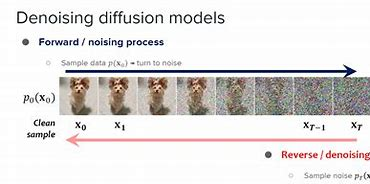
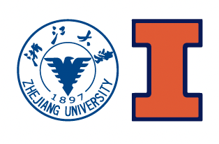

Improving Decoupled Posterior Sampling for Inverse Problems using Data Consistency Constraint
作者：Zhi Qi，Shihong Yuan，Yulin Yuan，Linling Kuang，Yoshiyuki Kabashima，Xiangming Meng。研究主线：扩散模型与 inverse problem。
ZJU / UIUC 2027 / Portfolio
浙江大学机械工程方向学生
我对 AI 很感兴趣，尤其关注强化学习、具身智能、机器人操作、机器人感知、足式机器人运动控制，以及扩散模型。这个网站是我的个人档案页，用来整理项目、科研与生活记录，也把原本分散的内容重新变成一个更清晰、更适合阅读的结构。
我最在意的，是“搭出来”和“真正理解它为什么能工作”这两件事交汇的地方：页面设计、系统调试、机构建模，以及把一个粗糙想法真正变成能在真实世界里运行的东西。

作者：Zhi Qi，Shihong Yuan，Yulin Yuan，Linling Kuang，Yoshiyuki Kabashima，Xiangming Meng。研究主线：扩散模型与 inverse problem。
实验室：浙江大学人本智造实验室。导师：王柏村教授。一个把 EEG 高层意图、任务路由和几何驱动空间感知真正接起来的机器人项目。
实验室：ZJU-UIUC 物理智能实验室。导师：谌烨教授 / 杨量景教授。一个围绕扩散策略的机器人操作项目，聚焦接触丰富的机械臂执行场景。
实验室：ZJU-UIUC 物理智能实验室。导师：谌烨教授 / 杨量景教授。一个感知驱动的足式运动控制项目，覆盖教师-学生学习、PPO 优化、跨仿真迁移和真机验证。
Education

在工程基础训练之上，逐步把兴趣集中到 AI、机器人、机器学习与具身智能方向。
我中学阶段最重要的学习经历之一，也是在这里逐步建立起数理基础与系统性的学习习惯。
更早一阶段的学习背景，也是在这里形成了持续稳定的学习节奏和长期好奇心。
语言成绩方面的一条明确记录，也支撑了后续跨校和国际化学习环境中的交流与课程体验。
Teaching Assistant
协助指导工程设计入门项目和编程作业，并在项目式学习中为学生提供问题求解、团队合作和技术沟通方面的支持。
每周组织习题课，讲解矩阵理论、特征值以及数值线性代数相关内容，并服务约 100 名学生的课后综合复习。
协助本科工程实验设备准备与维护工作，并在实验过程中指导学生安全、规范地使用仪器设备。
协助学生理解质点与刚体动力学中的运动、能量和动量相关内容，并组织讨论课，辅导基于 MATLAB 的计算作业。
协助热力学系统、能量分析以及热力学第一、第二定律相关教学，并辅导学生完成作业与考试复习。